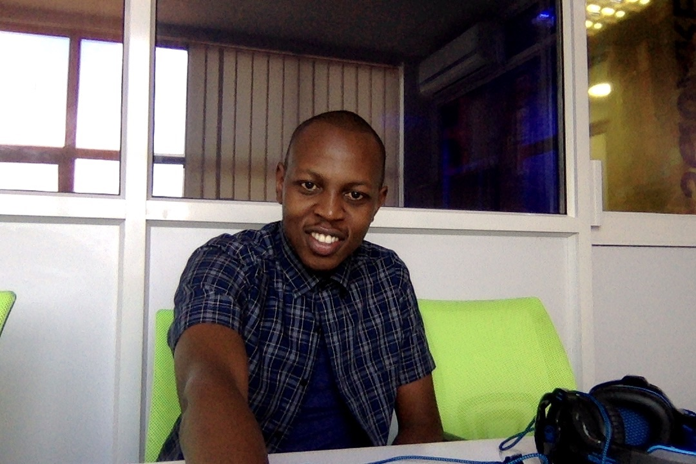
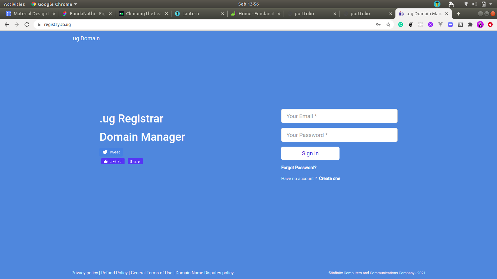
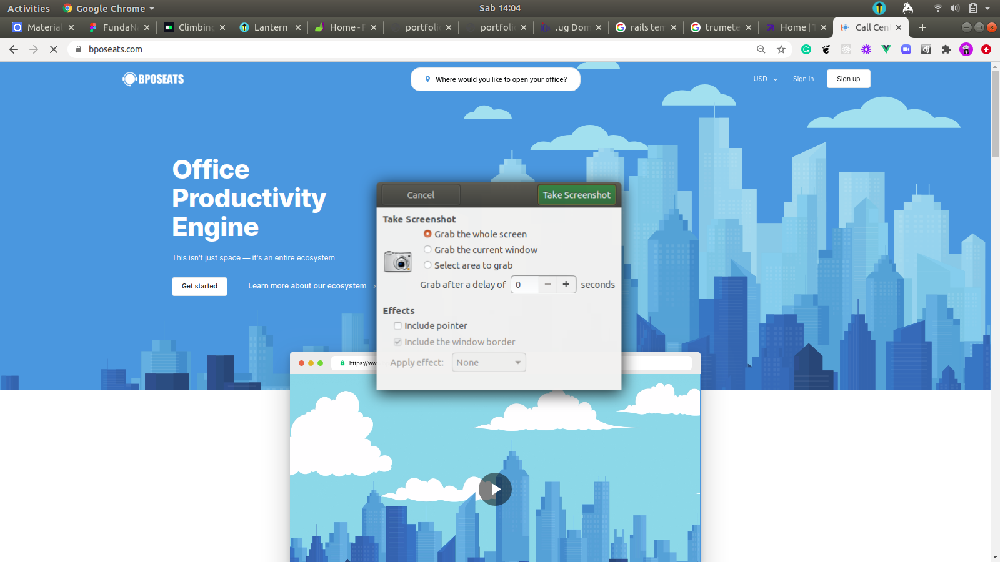
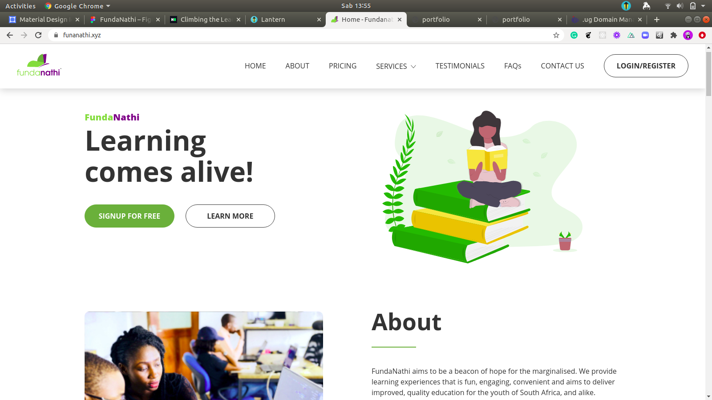

GitHub
Explore my GitHub to see production-grade code, side projects, and technical experiments. My repositories reflect my experience building APIs, backend systems, and modern web applications.
Senior Full-Stack Software Engineer with 7+ years of experience building scalable web platforms and high-performance APIs. I specialize in Ruby on Rails, Vue.js, React, and Python, delivering production systems used by global teams and real users. My work focuses on clean architecture, performance optimization, and reliable backend systems that scale. I enjoy collaborating with distributed teams and turning complex product ideas into maintainable software.

Explore my GitHub to see production-grade code, side projects, and technical experiments. My repositories reflect my experience building APIs, backend systems, and modern web applications.
Server-side development and API design
Modern reactive UI development
Infrastructure, deployment, and scaling

Administrative platform supporting the OneFarm ecosystem, enabling internal teams to manage farmers, monitor platform activity, and oversee operational workflows.
The system helps scale agricultural operations by providing tools for administration, monitoring, and data management across the platform.

Production platform powering the registration and management of .ug domain names. Users can register, manage, and maintain domain ownership through a centralized registry system.
Built as a Ruby on Rails monolithic application with PostgreSQL and server-rendered ERB templates.

Global hiring platform connecting remote talent from Asia and Africa with international employers.
Developed features across both backend and frontend layers using Django and Vue.js to support job listings, candidate profiles, and hiring workflows.

EdTech platform designed to deliver engaging digital learning experiences for underserved youth in South Africa.
Built using a microservices architecture with Vue.js, Nuxt, Spring Boot, and Node.js to support scalable educational delivery.
If you're interested in working together, discussing a project, or exploring opportunities, feel free to reach out.